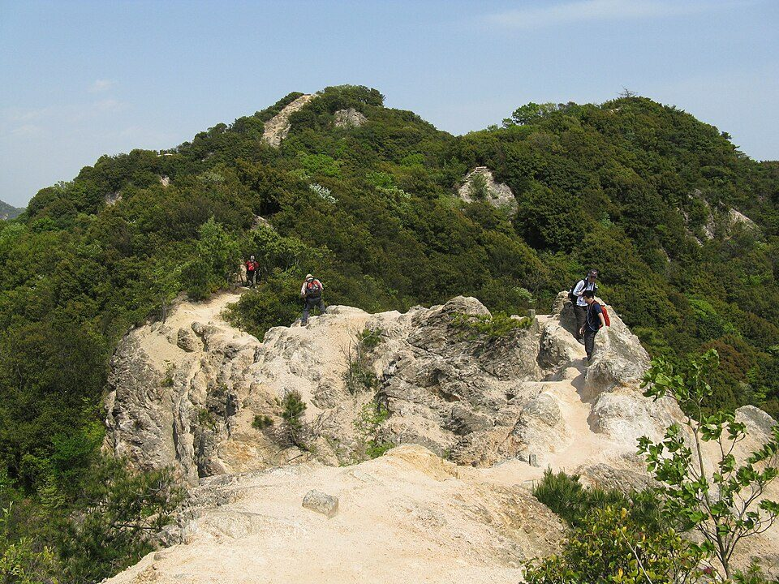
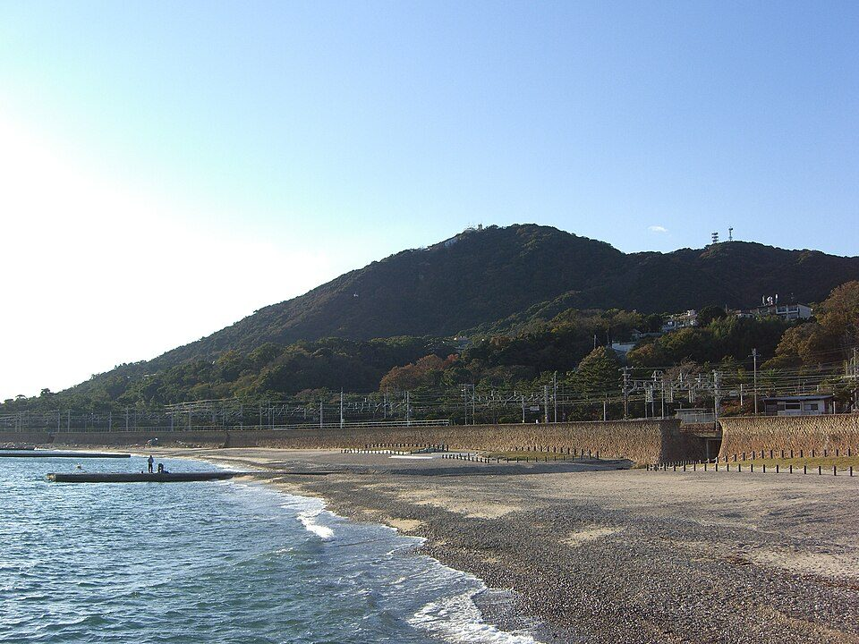
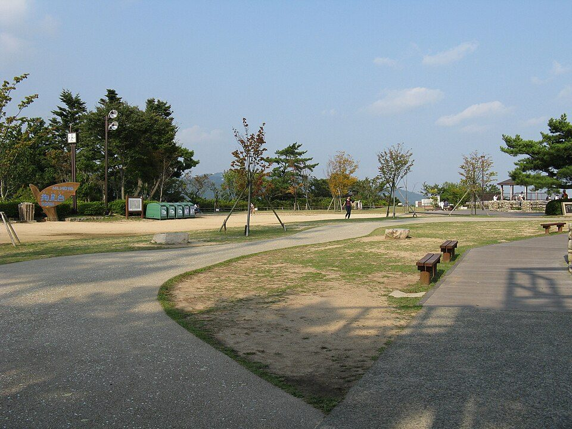
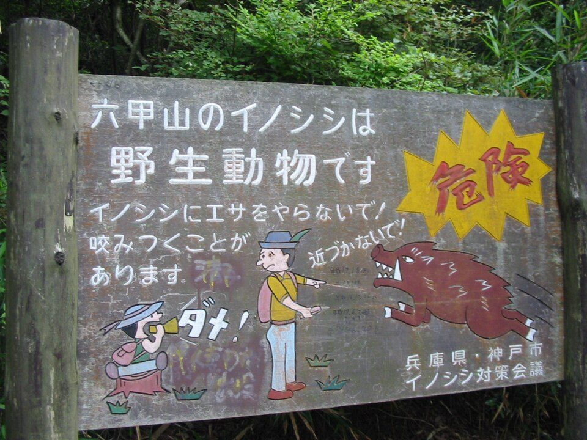

六甲全山縦走ガイド：4つの区間、途中で下りる方法、大会の条件と安全（2026年版）
要点まとめ
六甲全山縦走は、神戸市の西の須磨から東の宝塚まで、六甲山系の尾根をつないで歩くハイキングコースです[1]。毎年11月には神戸市などが大会を開いていて、2026年は11月8日に第52回が開かれました[9][10]。この記事では、一日で歩き通したい人と、何回かに分けて歩きたい人の両方に向けて、コース・途中で下りる方法・大会の条件・安全の情報をまとめました。根拠は神戸市・大会の公式サイト・兵庫県警察・国立天文台などの資料です。

六甲全山縦走とは
| 区間 | 須磨浦公園（神戸市）から宝塚まで[1][11] |
|---|---|
| 距離 | 公称56km[1] |
| 登る高さの合計 | 約3,000m[2] |
| いちばん高い山 | 六甲山（六甲山最高峰）931.3m。国土地理院の一覧では931m[1][12] |
| 国立公園 | 再度山から宝塚市の譲葉山までが、瀬戸内海国立公園の六甲地域[13] |
| 公式の地図 | 神戸市の「六甲全山縦走マップ」。2万5千分の1の地図と解説の小冊子で800円（税込かどうかの記載はない）[1] |
「56km」は公称。測り方で40km台にもなる
神戸市は公称56kmと案内。実測では40km台後半の例も
2017年の神戸新聞の調査では、神戸市の地図にある区間ごとの距離を足すと53km、地図の製作会社がGPSなどで求めた水平距離は44.186km、登山家が車輪の回転数で地面を測った結果は47.805kmでした[14]。市の担当者は、スタートが塩屋駅から須磨浦公園に変わったことや、橋ができて距離が短くなったことなどを理由に挙げています[14]。それでも神戸市は、今も「公称56km」と案内しています[1]。
- 大正時代
全山縦走そのものは、このころから
神戸市は「大正時代から行われていたようです」と紹介している[15]
- 1975年
第1回の六甲全山縦走大会
昭和50年に第1回が開かれた[15]
- 2020年
初めての中止
新型コロナウイルスの影響で、1975年の初開催以来はじめて中止した[16]
- 2024年
第50回の記念大会
全縦走は1,768人が参加し、1,365人が完走[17]
- 2026年11月8日
第52回大会
コースを4つの区間に分ける
神戸市の大会向けのコース説明は、全体を4つの区間に分けて、それぞれの難所を案内しています[3]。区間ごとの距離や標準の所要時間は、神戸市・大会のWebページには載っていません。市販の「六甲全山縦走マップ」には区間ごとの距離が書かれています[14][1]。工事や災害でコースが変わることもあります[3]。

① 須磨浦公園〜菊水山：岩場と急坂が続く前半
馬の背の岩場と、「第一の難所」菊水山の急坂
主な経由地は、須磨浦公園・鉢伏山・旗振山・高倉団地・栂尾山・横尾山・須磨アルプス・東山・妙法寺・高取山・鵯越・菊水山です[3]。栂尾山の400段の階段、須磨アルプスの「馬の背」（幅60〜80cmの岩場の尾根）と、前半から足場の悪い所が続きます[3]。
② 菊水山〜掬星台：ここまでで約半分
天王谷への下りと、「第二の難所」天狗道の登り
菊水山から天王谷へ一気に下り、天王吊橋を渡って鍋蓋山、大龍寺、市ケ原と進みます[3]。摩耶山の手前の天狗道は長い急な登りで「第二の難所」とされ、登りきった掬星台で全行程の約半分です[3]。

③ 掬星台〜一軒茶屋：車道が増え、下りる手段も多い
ガーデンテラスが、続けるかやめるかの最後の判断場所
アゴニー坂、丁字ヶ辻、記念碑台、ゴルフ場、六甲ガーデンテラスを経て一軒茶屋へ向かいます[3]。ここからはアスファルトの道が中心で、バス停やケーブルの駅もすぐ近くにあります[3]。神戸市は、ひざが痛むなら思い切ってリタイアするよう勧めています[3]。
④ 一軒茶屋〜宝塚：下りが続く、分かれ道の多い尾根
急で滑りやすい下りと、分かれ道の多さに注意
旧東六甲分岐点から水無山、船坂峠、大平山、譲葉山、塩尾寺を経て宝塚へ下ります[3]。小さな登り下りが多く、石ころや落ち葉が多い道で、分かれ道も多いルートです[3]。
途中で下りる、区間に分けて歩く
菊水山駅は、もうない
神戸電鉄の菊水山駅は2018年3月23日に廃止
菊水山のふもとにあった神戸電鉄有馬線の菊水山駅は、2018年3月23日に廃止されました[19]。古いガイドブックや記録で菊水山駅から歩き始める例を見かけても、今は使えません。
掬星台からは、まやビューラインで下りる
冬の月・水・木曜は、星の駅17:30発が最終
| 曜日 | 摩耶ケーブル | ロープウェー |
|---|---|---|
| 月・水・木 | 10:00〜17:40 | 10:10〜17:30 |
| 金・土・日・祝 | 10:00〜20:00 | 10:10〜19:50 |
| 火 | 定休日（祝日のときは、その次の平日が休み） | |
出典: [4]。掬星台の星の駅からロープウェーとケーブルを乗り継いで、ふもとの摩耶ケーブル駅まで下ります[4]。最終便を逃すと歩いて下るしかなく、夜は非常に危険だと運営者が注意しています[4]。
六甲山の上からは、六甲ケーブルで下りる
朝7時台から夜9時台まで。片道800円（小児400円）
六甲ケーブルは、六甲山上駅と六甲ケーブル下駅を約10分で結びます[20]。7時台は10分と40分発、8時台から20時台はおおむね20分おき、21時台は10分発です（平日の12時台は0分と30分発）[20]。交通系ICカードは使えません[20]。
区間に分けるなら、大会の半縦走のコースが目安になる
須磨浦公園〜新神戸と、新神戸〜宝塚の2回に分けられる
大会の半縦走は、須磨浦公園から菊水山・市ケ原を通って新神戸までです[11][3]。これを1日目にして、2日目に新神戸から市ケ原へ上がって残りを歩けば、2回で全体をつなげます（筆者の見解）。3回に分けるなら、2日目は掬星台からまやビューラインで下り、3日目にまやビューラインで掬星台へ上がる方法もあります（筆者の見解）。乗り物の最終時刻と定休日は、上の表で確かめてください[4]。
大会に出るには
大会は毎年11月に開かれ、申し込みは夏です。2027年の日程は、調査日の時点ではまだ発表されていません。ここでは2026年（第52回）の条件を例にします。
- 2026年7月21日
神戸市が募集を発表
参加者とボランティアの募集について発表した[9]
- 8月3日 12:00
申し込み開始
申し込みは8月31日まで、先着順[9]
- 8月18日
半縦走が定員に達して締め切り
午前11時に定員の500人に達した[21]
- 8月31日
全縦走の受け付けを締め切り
- 11月8日
大会の当日
全縦走と半縦走の違い
全縦走は定員1,800人で参加料8,000円
| 項目 | 全縦走 | 半縦走 |
|---|---|---|
| コース | 須磨浦公園→宝塚 | 須磨浦公園→新神戸 |
| 定員（先着順） | 1,800人 | 500人 |
| 参加料 | 8,000円 | 一般5,500円、中学生2,000円 |
| 参加できる人 | 15歳以上（中学生を除く）。18歳未満は保護者の同意が必要 | 12歳以上（中学生以上）で登山経験のある人。中学生は保護者の同伴が必要 |
| スタートの受付 | 5:00〜7:00 | 7:30〜9:00 |
| ゴールの最終受付 | 22:00 | 18:00 |
出典: [9][11]。参加料とは別に、インターネットで払う手数料がかかります[9]。参加料が税込かどうかは書かれていません。心臓や呼吸器の病気などの持病がある人は参加できません[11]。
関門の時刻に間に合わないと、先へ進めない
一軒茶屋は18:00、宝塚のゴールは22:00が最終受付
| チェックポイント | 受付開始 | 最終受付 |
|---|---|---|
| 須磨浦公園（スタート） | 5:00 | 7:00 |
| 菊水山 | 8:30 | 12:15 |
| 掬星台 | 12:00 | 15:30 |
| 六甲ガーデンテラス | 13:05 | 17:10 |
| 一軒茶屋 | 13:50 | 18:00 |
| 宝塚（ゴール） | 16:30 | 22:00 |
出典: [11]。2022年から最終受付が40分早くなり、各チェックポイントの締め切りも早まりました[11]。コースには、各チェックポイントの最終時刻に着く速さで歩く「赤鬼」と、その約30分前を歩く「黄鬼」がいて、ペースの目安になります[23]。
完走率は、天気で大きく変わる
悪天候の2025年は、全縦走の完走率が64.8%
2025年の全縦走は1,553人が参加して1,006人が完走し、2024年は1,768人が参加して1,365人が完走しました[17]。神戸市は2025年の大会を「悪天候の中」の開催だったと書いています[17]。2026年の結果は、調査日の時点ではまだ公表されていません。
安全：道迷い、日没、登山届
兵庫県の山の遭難の約半数が、六甲山系
いちばん多い原因は道迷い。40歳以上が7割以上
兵庫県警察によると、県内の山岳遭難は年100件前後で、場所では約半数が六甲山系、原因では道迷いが最も多く、年代では40歳以上が7割以上です[24]。兵庫県が公開している2025年（令和7年）の一覧を筆者が数えると、県全体126件のうち六甲山系が70件で、そのうち道迷いが32件でした[5][6]。
秋から冬は、日の入りが17時前後
11月8日の神戸の日の入りは17:00
| 日付 | 日の出 | 日の入り |
|---|---|---|
| 4月15日 | 5:28 | 18:31[25] |
| 10月15日 | 6:04 | 17:25[26] |
| 11月1日 | 6:19 | 17:06[7] |
| 11月8日 | 6:26 | 17:00[7] |
| 11月15日 | 6:33 | 16:55[7] |
| 11月30日 | 6:47 | 16:49[7] |
| 12月8日 | 6:53 | 16:48[27] |
| 12月21日 | 7:02 | 16:52[27] |
国立天文台の値は、海面の高さで計算した時刻です[7]。尾根の上と谷の中では、明るさの残り方が変わります。大会の一軒茶屋の最終受付は18:00なので、11月の大会では後半を暗くなってから歩く人が多くなります（筆者の見解）[11]。
登山届は、紙かオンラインで出せる
県警の様式か、オンラインの「コンパス」で出せる
兵庫県警察は、登山届を出すよう呼びかけていて、様式のほかにオンラインの登山届のシステム「コンパス」も案内しています[24]。兵庫県のページには、登山計画書の様式（Word）があります[28]。どこを歩くか、いつ下りるかを家族にも伝えておくと、道に迷ったときに捜す範囲を絞れます（筆者の見解）。
イノシシ、クマ、マダニ

イノシシ：刺激せず、ゆっくり後ずさり
食べ物は体から離す。餌付けは条例で禁止の区域も
神戸市は、イノシシに出会ったら刺激せず、近づいてきたら慌てずにゆっくり後ずさりするよう案内しています[29]。東灘区・灘区の山手幹線より北の区域や中央区の一部などでは、条例で餌付けが禁止されています[30]。
クマ：神戸市北区でも撮影されている
大会では、クマ鈴を必ず持つことになっている
2026年6月11日と7月18日に、神戸市北区道場町の山林で、センサーカメラにツキノワグマが写りました[31]。神戸市は、鈴やラジオ、笛など音の出るものを身につけるよう呼びかけています[31]。大会では、クマ鈴を必ず持ち、市街地では音が出ないようにするよう求めています[8]。
マダニ：秋から初冬にも多い
六甲山では10月から12月初めにもマダニが多い
神戸市によると、六甲山では10月から12月初めにも、主にキチマダニが多くいるという調査があります[32]。マダニが運ぶ感染症（SFTS）の患者は、2025年に全国で192人、兵庫県で10人でした[33]。
装備と持ち物
神戸市が大会向けにすすめる装備
予備の電池は約7時間分。傘は禁止で、軍手も不可
| もの | 神戸市の案内 |
|---|---|
| ヘッドライト | 事前に点くか確かめ、予備の電池（約7時間分）も持つ |
| レインウェア | 上下が分かれたもの。傘は禁止 |
| 手袋 | 防水性・防風性のあるもの。軍手は不可 |
| 靴 | 底がある程度硬く、足首が固定されるもの。舗装路が多いので、ミッドカット程度が適当だろうとしている |
| ズボン | 乾きやすい素材の長ズボン。綿は濡れると乾きにくい |
| 飲み物 | 自動販売機があっても売り切れていることがある。自分で用意する |
| クマ鈴 | 必ず持ち、音を出して歩く。市街地では音を止める |
出典: [8]。大会の日は、コース上の自動販売機が売り切れる可能性が高いので、飲み物と軽食を事前に十分用意するよう大会が求めています[23]。
今回確認できなかった点
- 区間ごとの公式の距離と標準の所要時間（Webには載っていない）
- 2026年大会の参加者数・完走者数と、2027年大会の日程
- 大会の参加料と地図の価格が税込かどうか
- 山の上の売店・トイレの場所と営業時間
- 六甲山上バスの始発と最終の時刻
- 夏の熱中症や冬の凍結について、六甲山向けの公的な注意
出典（33件）
閲覧日はいずれも2026年11月9日
- 六甲全山縦走コースとマップの販売（神戸市）
- ホーム（KOBE六甲全山縦走・半縦走大会 公式サイト（主催：六甲全山縦走市民の会・神戸市））
- 【六甲全山縦走大会】コース説明（神戸市）
- 営業時間・料金（六甲・まや空中散歩（まやビューライン））
- 【令和7年】山岳遭難発生状況一覧（冬山）（兵庫県（兵庫県警察提供））
- 【令和7年】山岳遭難発生状況一覧（夏山）（兵庫県（兵庫県警察提供））
- 日の出入り＠神戸（兵庫県）2026年11月（国立天文台 暦計算室）
- 大会当日の装備・携行品について（神戸市）
- 「第52回KOBE六甲全山縦走・半縦走大会2026」参加者及びボランティア募集を開始します！（神戸市）
- 六甲全山縦走・半縦走大会は予定通り開催いたします。（2026年11月8日）（KOBE六甲全山縦走・半縦走大会 公式サイト）
- 大会要項（KOBE六甲全山縦走・半縦走大会 公式サイト）
- 日本の主な山岳標高（1003山）一覧（CSV、2026年3月31日版）（国土地理院）
- 六甲山の緑（神戸市）
- 六甲縦走「公称56キロ」は本当？ 実測は47キロ（2017年7月11日）（神戸新聞NEXT）
- 「神戸」と「登山」の関係（神戸市）
- 「六甲全山縦走・半縦走大会」初の中止 コロナ影響（2020年6月30日）（神戸新聞NEXT）
- KOBE六甲全山縦走・半縦走大会（2024年・2025年の結果）（神戸市）
- 六甲全山縦走大会とは（神戸市）
- 年譜（神戸電鉄）
- 営業案内（六甲ケーブル）（神戸六甲鉄道）
- 半縦走のエントリーを締切りました（2026年8月18日）（KOBE六甲全山縦走・半縦走大会 公式サイト）
- 全縦走のエントリーを締切りました（2026年9月1日）（KOBE六甲全山縦走・半縦走大会 公式サイト）
- FAQ（KOBE六甲全山縦走・半縦走大会 公式サイト）
- 山岳遭難・水難発生状況（兵庫県警察）
- 日の出入り＠神戸（兵庫県）2026年4月（国立天文台 暦計算室）
- 日の出入り＠神戸（兵庫県）2026年10月（国立天文台 暦計算室）
- 日の出入り＠神戸（兵庫県）2026年12月（国立天文台 暦計算室）
- 山の遭難事故防止・啓発（登山計画書の様式）（兵庫県）
- イノシシ被害対策（神戸市）
- 神戸市いのししからの危害の防止に関する条例（神戸市）
- ツキノワグマ情報（神戸市）
- ダニが媒介する感染症に注意（神戸市）
- マダニに注意！ダニ媒介感染症（兵庫県）
写真・画像の出典（4件）
- 須磨アルプスの「馬の背」
写真: KENPEI／Wikimedia Commons（CC BY-SA 3.0） - 須磨の海岸から見た鉢伏山
写真: jim212jim／Wikimedia Commons（CC BY 2.0） - 摩耶山の掬星台
写真: KENPEI／Wikimedia Commons（CC BY-SA 3.0） - イノシシに餌をやらないよう呼びかける看板
写真: Lowell Silverman／Wikimedia Commons（CC BY-SA 2.5）